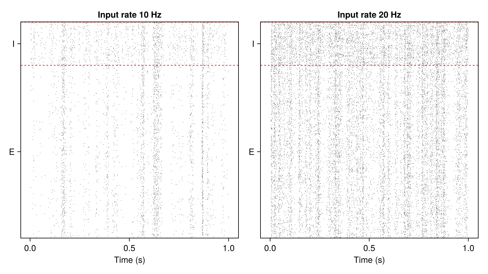

Tutorial: simulations
After this tutorial you can build a network from a configuration, run it, save it to disk, load it back, continue or rerun it, and sweep a parameter. Details: Running simulations.
<!– run: sequential –>
A network from a configuration
using SpikingNeuralNetworks
SNN.@load_units
using CairoMakie, Random
config = (
N = (E = 800, I = 200),
exc = SNN.IFParameter(C = 200pF, gl = 10nS, Vt = -50mV, Vr = -70mV),
inh = SNN.IFParameter(C = 200pF, gl = 10nS, Vt = -53mV, Vr = -70mV),
synapse = SNN.SingleExpSynapse(τe = 5ms, τi = 5ms, E_e = 0mV, E_i = -80mV),
spike = SNN.PostSpike(τabs = 2ms),
conn = (EE = (p = 0.05, μ = 2nS), EI = (p = 0.05, μ = 2nS),
IE = (p = 0.05, μ = 20nS), II = (p = 0.05, μ = 20nS)),
input = (N = 100, rate = 20Hz, p = 0.1, μ = 4nS),
)
function network(config)
(; N, exc, inh, synapse, spike, conn, input) = config
E = SNN.IF(; N = N.E, param = exc, synapse, spike, name = "E")
I = SNN.IF(; N = N.I, param = inh, synapse, spike, name = "I")
EE = SNN.SpikingSynapse(E, E, :ge; conn = conn.EE)
EI = SNN.SpikingSynapse(E, I, :ge; conn = conn.EI)
IE = SNN.SpikingSynapse(I, E, :gi; conn = conn.IE)
II = SNN.SpikingSynapse(I, I, :gi; conn = conn.II)
noise = SNN.PoissonLayer(rate = input.rate, N = input.N)
inE = SNN.Stimulus(noise, E, :ge; conn = (p = input.p, μ = input.μ))
inI = SNN.Stimulus(noise, I, :ge; conn = (p = input.p, μ = input.μ))
return SNN.compose(; E, I, EE, EI, IE, II, inE, inI, silent = true)
end
model = network(config)
SNN.sim!(model, 500ms) # let the network settleA function of a configuration NamedTuple makes a network easy to rebuild, save with its parameters, and vary.
Save, load and continue
dir = mktempdir()
SNN.save_model(; model, path = dir, name = "ei", info = (rate = 20,), config)
loaded = SNN.load_model(dir, "ei", (rate = 20,))
copy1 = loaded.model
SNN.get_time(copy1.time) # 500.0: the clock is saved with the model
loaded.config.input.rate # 0.02 (20 Hz), the configuration is saved too
SNN.sim!(copy1, 500ms) # continue from 500 ms
SNN.get_time(copy1.time) # 1000.0save_model writes the model (weights, state, clock) and, optionally, its config to a folder named after name and info; load_model returns them. Recordings are not saved with the model.
Rerun from the same state
Load the saved model twice and run both copies with the same random seed: they are identical.
a = SNN.load_model(dir, "ei", (rate = 20,)).model
b = SNN.load_model(dir, "ei", (rate = 20,)).model
for m in (a, b)
SNN.monitor!(m.pop, [:fire])
Random.seed!(42)
SNN.sim!(m, 500ms)
end
SNN.spiketimes(a.pop.E) == SNN.spiketimes(b.pop.E) # trueThe same pattern runs one saved, settled network under several conditions.
Sweep a parameter
SNN.@update returns a modified copy of a configuration:
fig = Figure(size = (800, 450))
for (n, rate) in enumerate([10, 20])
cfg = SNN.@update config begin
input.rate = rate * Hz
end
m = network(cfg)
SNN.monitor!(m.pop, [:fire])
SNN.sim!(m, 1s)
ax = Axis(fig[1, n], title = "Input rate $rate Hz", xlabel = "Time (s)")
SNN.raster!(ax, m.pop)
end
save("sweep.png", fig)
Precision and threads
E64 = SNN.IF(N = 100, VFT = Vector{Float64}) # a Float64 population
SNN.float_type(E64) # Float64
SNN.sim!(model, 100ms; neurons_per_thread = 512) # threaded if Julia has threadsMore scripts
Runnable scripts in the examples folder of the package:
utils/load_model.jl: save a network, load it, continue it, rerun it without one stimulustutorials/perturbations/EI_network_perturbation.jl: perturbing a running E/I networktutorials/extensions/neuron_model.jl: a new neuron model (see Model extensions)tutorials/extensions/stimulus_model.jl: a new stimulus modeltutorials/extensions/doubleExpCurrent.jl: a new synapse model